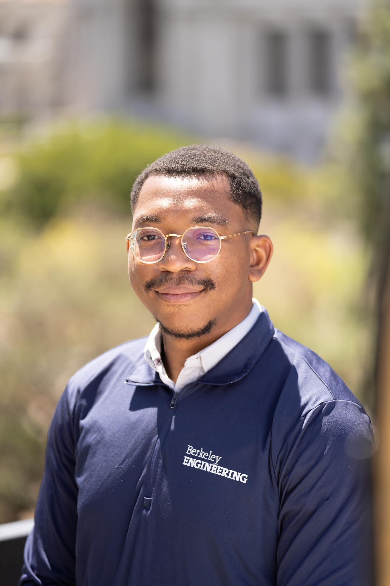

Hi, I am Alexandre E. S. Georges, a Ph.D. student in the Environmental Fluid Mechanics and Hydrology group at UC Berkeley.
I am interested in sediment transport, hydrology, remote sensing, and hydrodynamic modeling to track the evolution of mangrove forests in Haiti and the Caribbean and study their potential as natural coastal protection infrastructure against sea-level rise. I am also interested in using Data Science and Public Policy to tackle the challenge of climate change in the Caribbean region.
I am currently working on the following projects:
To learn more about my research group, visit the lab website here: UC Berkeley EFMH